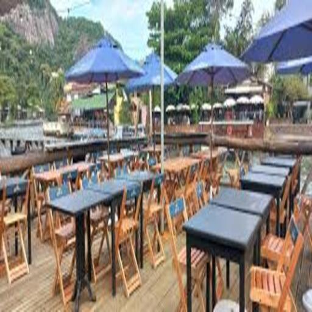
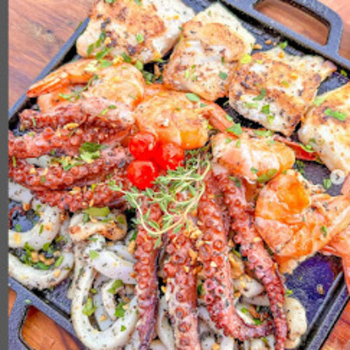
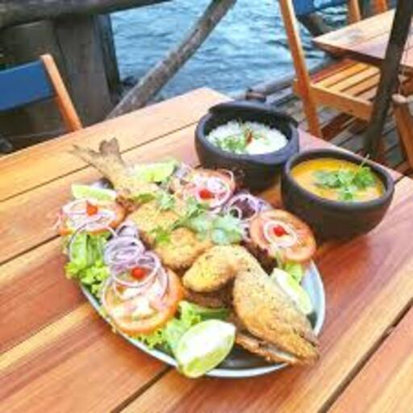
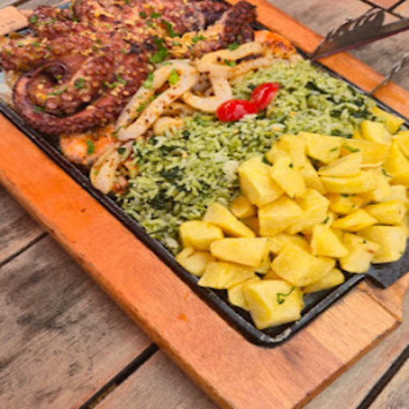
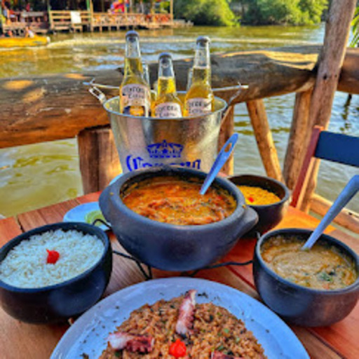
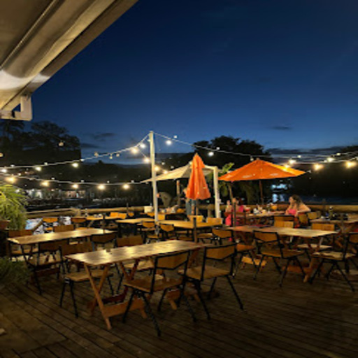
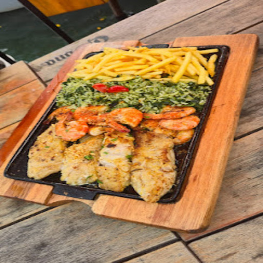
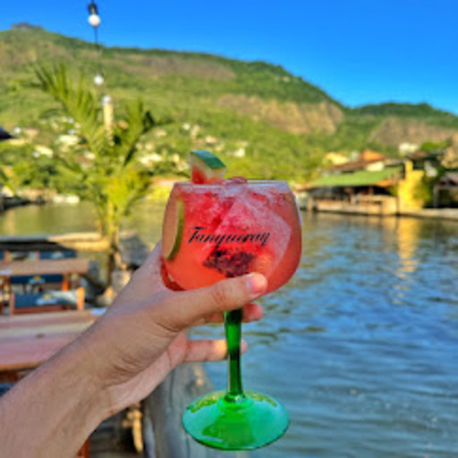

Salomé al Mare
Ambiente descontraído, pastel famoso e as melhores tábuas de frutos do mar.

Dica do Capi:
📸 Conheça o Espaço








O Salomé al Mare é um dos pilares do polo gastronômico da Ilha Primeira. Com um ambiente acolhedor à beira da lagoa, o espaço é perfeito para quem busca relaxar e comer bem cercado por uma vista privilegiada.
A casa é celebrada pela sua seleção rigorosa de frutos do mar, preparados com o frescor que o clima da ilha exige.
🐚 Paradas Obrigatórias
- Pastel de Camarão: Crocante e generosamente recheado, é apontado por muitos como um dos melhores de toda a Ilha.
- Tábua de Frutos do Mar: Uma opção farta e completa, ideal para compartilhar entre amigos ou família enquanto aproveita a brisa da lagoa.
Com um atendimento atencioso e pratos que marcam a memória, o Salomé al Mare é parada indispensável para quem deseja explorar o melhor da culinária lagunar.